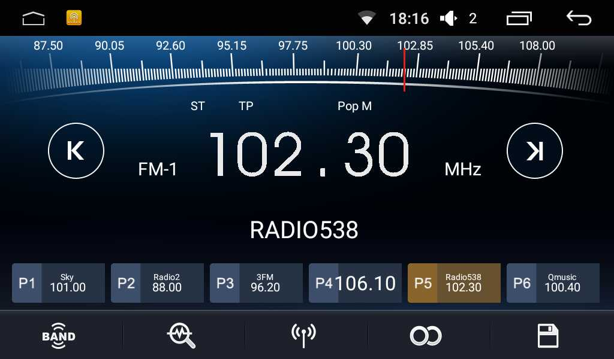
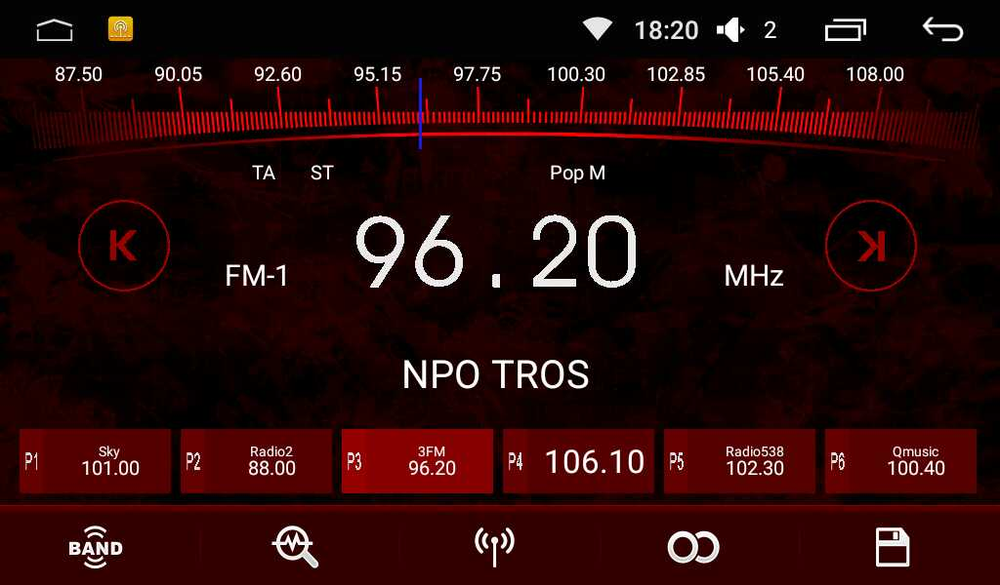
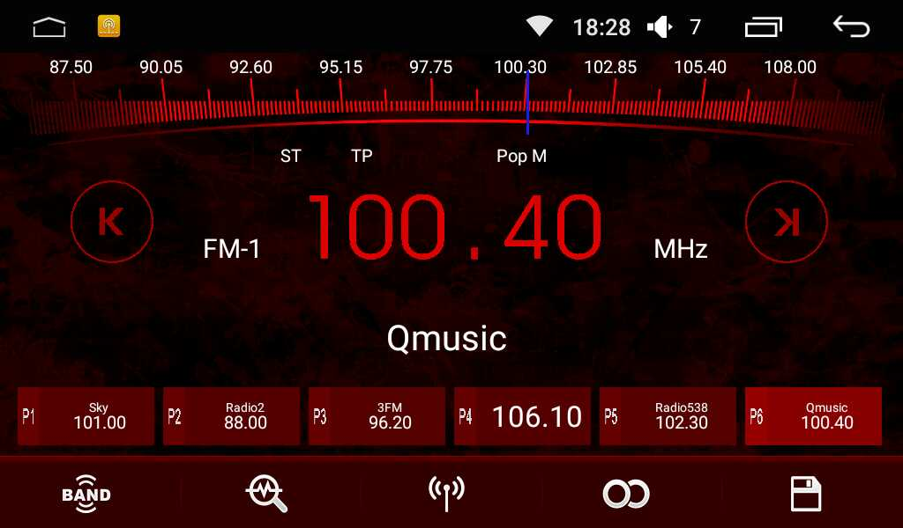

Install modded Radio app
The default Radio app of Joying is in general working well (apart from the AF function which is completely wrong), but I don't like the layout.
I now made 5 versions: a BLUE_WHITE, a RED, a RED_WHITE, an ORANGE and a GREEN version. The RED and RED_WHITE version are simple modifications on the ones that XDA developer gustden already made.
Update 4 May 2017: Added the default stock Joying app in case you want to switch back.
Update 17 April 2017: Added a green "Ford/Skoda" version.
Update 7 April 2017: Added an orange "BMW" version; Corrected P2 button Red version.
There are simply 5 folders each containing its own version with a simple install.bat and install.sh script for windows and linux likes.
The mods are currently:
- only the change of buttons (gustden's mods),
- a change of lay-out, which is a json "text" file with xy-coordinates, and modifications of buttons. The buttons in my mods are half the size to create one row of buttons instead of two rows. (Other examples can be found here and here).
I put the PS text from (small) top left to the center, increased font size and removed the "PS: prefix, and put all station buttons on a single row.
The Radio app has a corrupted RDS text. The PS text is 8 characters and that same field is used for the 32 or 64 character RDS-text, but this string is not handled correctly by the app.
The RED version is for older Audi (and older Volkswagen?)
The RED_WHITE version is for a newer Audi (and newer Volkswagen ?)
The BLUE_WHITE has the frequency in white instead of yellow.
The ORANGE version is for BMWs.
The GREEN versions is for Ford and Skoda.
All have the modified Station name (PS text) and modified buttons.
And for those who wantto switch back to the default Joying Radio app, I also added the JOYING_DEFAULT.
Requirements:
adb - For windows it has been packaged in this repository in the win-adb folder and it will be used from there. On Linux or one of the other systems you need to install it using your favorite package manager (like for Ubuntu/Debian likes: `sudo apt-get install adb`) or install it via the Android SDK (as can be done for windows as well).- You need either a Windows Laptop/PC or a Linux/*BSD/MacOS X/Solaris laptop/PC that is connected to the same WiFi network as your Head Unit. You can find the ip-address of your head unit via
Settings -> WiFi; vertical "triple-dot" menu in top-right; Advanced.
How-To install:
- If you downloaded this repository as zip, you unzip the file somewhere to your disk.
-
- On Windows: Run CMD.exe as Administrator.
- On Linux likes: Open a terminal.
- Change to the folder where you unzipped the files or downloaded the repository, and change into the `Radio_Mod` folder. Then change to the folder of your preferred color version.
-
- On Windows: Run the install.bat script with the IP address of your Head Unit as a parameter:
install.bat 192.168.178.50 (for example)
- On linux: Run the install.sh script with the IP address of your Head Unit as a parameter:
./install.sh 192.168.178.50 (for example)
- Wait until the script finishes.
- Done. You can reboot but it is not neccessary.
Note!
If you get warnings that you don't get access to write/copy AND you have already rooted your device with SuperSu, you need to give access via the SuperSu apk to adb wanting to operate in root mode (the su command).
Blue_White

Red_White

Red

Orange

GREEN

- screenshots made with Screenshot Touch
- The screenshot of the GREEN version made from the Vladikoff Archon emulator